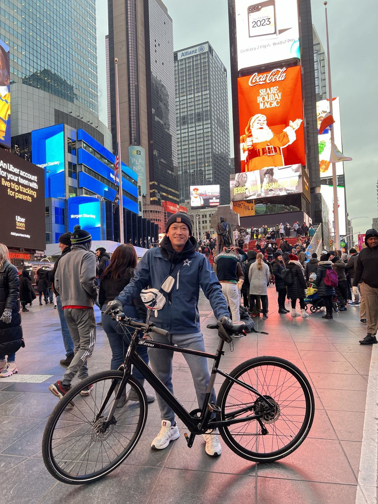

Precision Motion
Reducer, gear transmission and motion solutions for robotics, automation and emerging industrial applications.
GLOBAL TECHNOLOGY · BUSINESS DEVELOPMENT
Precision Motion · Robotics · Industrial Technology
International business development professional with 8+ years of experience connecting technology, customers, and markets across North America, Europe, and Asia.

01 — ABOUT
International business development professional with 8+ years of experience connecting technology, customers, and markets across North America, Europe, and Asia.
Experienced in global OEM account management, technical sales, new business development, RFQ management, and cross-functional project execution across mobility, automotive, and industrial technology.
My current focus is precision motion, reducers, robotics and industrial automation—building on a career that moved from mobility and automotive into broader industrial technology and global market development.
From Mobility to Motion — Connecting Technology. Creating Growth.
02 — EXPERTISE
A cross-functional profile built for global customers, complex products and emerging markets.
Reducer, gear transmission and motion solutions for robotics, automation and emerging industrial applications.
Market development, customer acquisition, strategic accounts, RFQ, quotation and commercial negotiation.
Long-term OEM relationships across North America, Europe and Asia, including major bicycle and mobility brands.
Coordinate engineering, sourcing, manufacturing and quality teams to move projects from concept to production.
E-bike systems, batteries, motors, product certification and design optimization for global customers.
SAP, CRM, Power BI, Tableau, Python, R and SPSS, supported by an M.S. in Information Technology and Management.
03 — EXPERIENCE
A career built around technical products, global OEM relationships and increasingly broad business responsibility.
TURVO
Current focus on precision transmission and reducer applications, connecting product capability with robotics, industrial automation and emerging global markets.
DARFON ELECTRONICS CORP.
Developed and managed strategic OEM accounts across Europe, North America and Asia, including BRP, Trek, CUBE and Canyon. Led new business development, RFQ, quotation and cross-functional coordination from concept through mass production.
HYENA E-BIKE SYSTEMS
Managed bike-brand customers in the US, EU and Japan, including Trek, PON Group, Halfords and BRP. Served as point of contact for assigned accounts, developed long-term relationships, forecasted account metrics and identified growth opportunities.
SHIHLIN ELECTRIC & ENGINEERING CORP.
Developed new clients, increasing the client base by 30% per season; maintained automotive-company relationships, translated customer requirements to design teams, conducted cold visits/calls and coordinated assembly and shipping.
GLOBAL SOURCE INC.
Coordinated engineering requirements between customers and internal design teams and built daily sales reports and analytics.
TAIWAN FIXED NETWORK CO., LTD. — TAIWAN MOBILE GROUP
Managed IT operations, infrastructure performance, production support, systems/database administration and network operations; implemented continuous improvement programs and business-intelligence analysis in R.
YES LOGISTICS CO., LTD. — YANG MING MARINE TRANSPORT GROUP
Developed new clients, increased the client base by 30% per season, maintained marine-company relationships and coordinated shipping solutions across multiple offices.
04 — SELECTED FOCUS
Areas where technical understanding, customer development and market strategy intersect.
PRECISION MOTION
GLOBAL OEM
DATA & PRODUCT
ACADEMIC PROJECT
DATA VISUALIZATION
05 — EDUCATION & TOOLS
M.S. — Information Technology and Management
Concentration GPA: 3.6
Bachelor — Tourism Management
Concentration GPA: 3.5
SAP · CRM · Microsoft Office · Power BI · Tableau · Python (Data Analysis) · R · SPSS
English — fluent · Chinese — fluent
06 — CAREER VISION
The next chapter is about moving from product and account responsibilities toward broader global business ownership—combining technical understanding with customer, revenue and market responsibility.
07 — CONTACT
Open to conversations around global business development, strategic accounts, robotics, precision motion, industrial technology and North American market development.